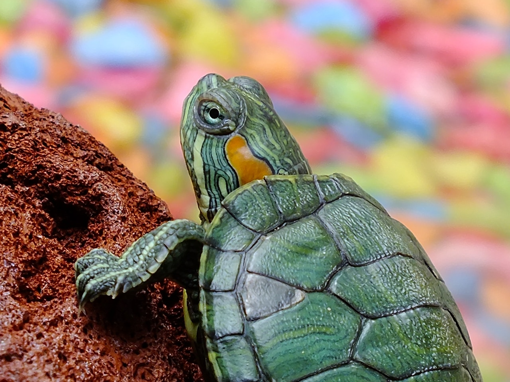
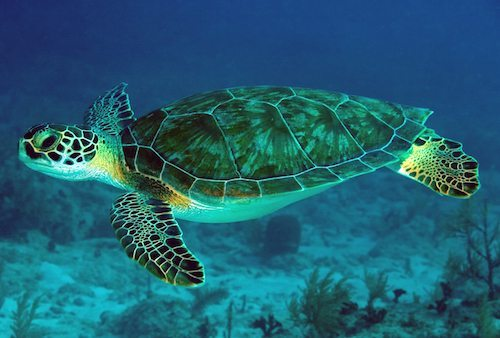
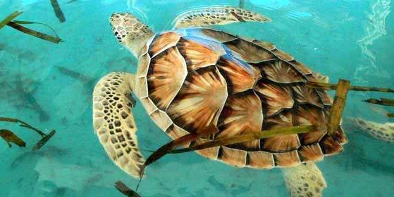
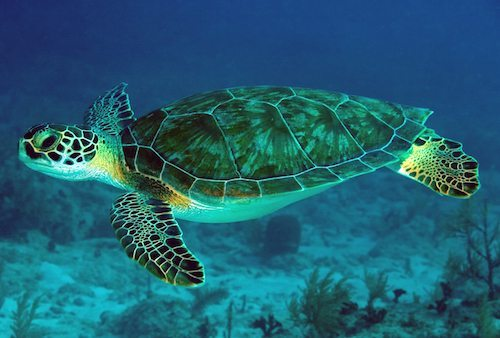
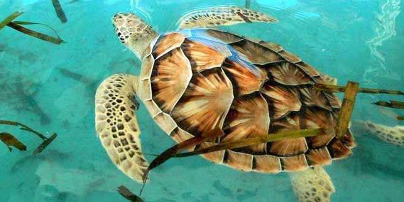

Las tortugas o quelonios (Testudines) forman un orden de reptiles (Sauropsida) caracterizados por tener un tronco ancho y corto, y un caparazón o envoltura que protege los órganos internos de su cuerpo. De su caparazón salen, por delante, la cabeza y las patas delanteras, y por detrás las patas traseras y la cola.
La característica más importante del esqueleto de las tortugas es que una gran parte de su columna vertebral está soldada a la parte dorsal del caparazón. El esqueleto hace que la respiración sea imposible por movimiento de la caja torácica; se realiza principalmente por la contracción de los músculos abdominales modificados que funcionan de modo análogo al diafragma de los mamíferos y por movimientos de bombeo de la faringe.2 Aunque carecen de dientes, tienen un pico córneo que recubre su mandíbula, parecido al pico de las aves.
 


